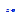
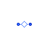

Table of Contents
- User's Guide
- Blocks
- Conditions
- Assemblies
- Regions
- Subregions
- Phases
- Species
- Chemistry
- Connectors
- Characteristics
- Units
- Quantities
- Utilities
- Icons
Download
- Latest: v0.1.1
FCSys.Conditions.Adapters
Interfaces to the Modelica Standard LibraryInformation
Extends from Modelica.Icons.Package (Icon for standard packages).Package Content
| Name | Description |
|---|---|
|  AmagatDalton | Adapter between the Amagat and Dalton connectors |
| Adapter between the Chemical and Reaction connectors | |
| Adapters to the Modelica Standard Library |
 FCSys.Conditions.Adapters.AmagatDalton
Adapter between the Amagat and Dalton connectorsInformation
This model is used to convert the representation of mixtures between Amagat's law of partial volumes and Dalton's law of partial pressures.
For more information, please see the documentation in the Connectors package.
Extends from FCSys.Icons.Names.Top1.
Connectors
| Type | Name | Description |
|---|---|---|
| Amagat | amagat | Connector for additivity of volume |
| Dalton | dalton | Connector for additivity of pressure |
Modelica definition
model AmagatDalton "Adapter between the Amagat and Dalton connectors" extends FCSys.Icons.Names.Top1; Connectors.Amagat amagat "Connector for additivity of volume"; Connectors.Dalton dalton "Connector for additivity of pressure"; equation // Static balances 0 = amagat.p + dalton.p "Pressure"; 0 = amagat.V + dalton.V "Volume"; end AmagatDalton;
 FCSys.Conditions.Adapters.ChemicalReaction
FCSys.Conditions.Adapters.ChemicalReaction
Adapter between the Chemical and Reaction connectors

Information
This model is used to add the stoichiometrically-weighted chemical potential of a species to the net chemical potential of a reaction. The species is produced at the stoichiometrically-weighted rate of the reaction.
For more information, please see the documentation in the Connectors package.
Parameters
| Type | Name | Default | Description |
|---|---|---|---|
| Integer | n_trans | Number of components of translational momentum | |
| Integer | n | Stoichiometric coefficient | |
| Material properties | |||
| MassSpecific | m | Specific mass [M/N] | |
Connectors
| Type | Name | Description |
|---|---|---|
| Chemical | chemical | Connector for a species in a chemical reaction |
| Reaction | reaction | Connector for a chemical reaction |
Modelica definition
model ChemicalReaction "Adapter between the Chemical and Reaction connectors" // extends FCSys.Icons.Names.Top1; constant Integer n_trans(min=1,max=3) "Number of components of translational momentum"; // Note: This must be a constant rather than a parameter due to errors // in Dymola 2014. parameter Integer n "Stoichiometric coefficient"; parameter Q.MassSpecific m "Specific mass"; // Auxiliary variables (for analysis) output Q.Velocity phi[n_trans](each stateSelect=StateSelect.never) = actualStream(chemical.phi) if environment.analysis "Velocity of the stream"; output Q.PotentialAbsolute sT(stateSelect=StateSelect.never) = actualStream( chemical.sT) if environment.analysis "Specific entropy-temperature product of the stream"; Connectors.Chemical chemical(redeclare final constant Integer n_trans=n_trans) "Connector for a species in a chemical reaction"; // Note: This redeclaration is necessary due to errors in Dymola 2014. Connectors.Reaction reaction(final n_trans=n_trans) "Connector for a chemical reaction"; protected outer Conditions.Environment environment "Environmental conditions"; equation // Equal intensive properties reaction.g = n*chemical.g "Chemical potential"; reaction.phi = chemical.phi "Velocity (upon outflow)"; reaction.sT = chemical.sT "Specific entropy-temperature product (upon outflow)"; // Conservation (without storage) 0 = chemical.Ndot + n*reaction.Ndot "Material"; zeros(n_trans) = m*actualStream(chemical.phi)*chemical.Ndot + reaction.mPhidot "Translational momentum"; 0 = actualStream(chemical.sT)*chemical.Ndot + reaction.Qdot "Energy"; end ChemicalReaction;